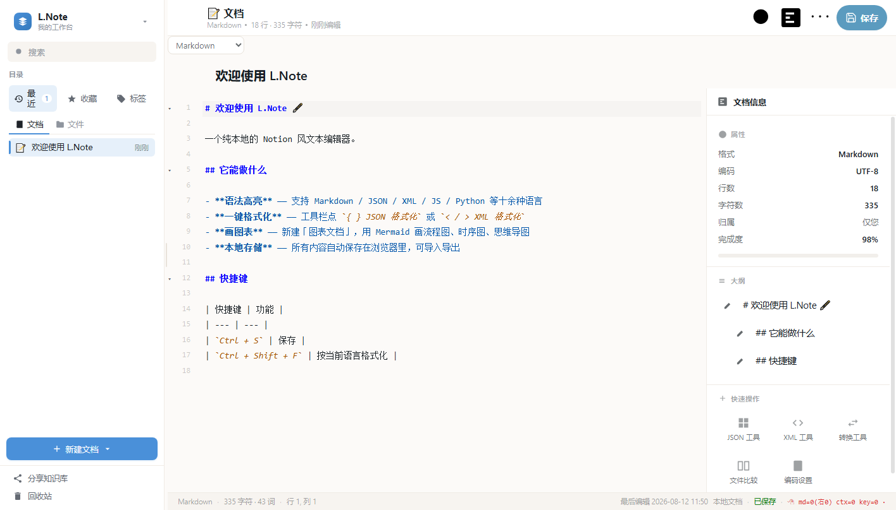

L.
L.Note
本地 Notion 风文本编辑器 —— 语法高亮 · Markdown 预览 · Mermaid 图表 · JSON/XML 工具
免费 · 免安装 · 纯本地运行 · 无需联网 · v0.20.44
首次运行提示：当前版本未做代码签名，Windows SmartScreen 可能提示「未知发布者」。点击「更多信息」→「仍要运行」即可正常使用；核对上方 SHA256 可确认文件完整安全。
功能特性
📝 12 种语法高亮
Markdown / JSON / XML / HTML / JavaScript / Python / CSS / SQL / Shell / YAML / C·Java / Mermaid，括号配对、代码折叠、多光标编辑。
👁 Markdown 实时预览
marked 渲染 + highlight.js 代码高亮 + KaTeX 数学公式，所见即所得；支持 Mermaid 流程图与思维导图实时渲染。
🧱 富文档（思维笔记）
Notion 风块编辑器 + 飞书式大纲导航，bubble menu 快捷排版，支持保存为磁盘文件。
🛠 JSON / XML 工具
格式化与压缩；混合文本中可只序列化 JSON 片段（含半截 JSON），并高亮标记问题位置。
🔍 查找/替换
正则支持、全文档高亮、批量替换、收藏规则、多行匹配；文件比较（双栏行级 diff）。
💾 磁盘文件集成
打开/导入本地文件，Ctrl+S 直接覆盖保存；外部修改后重新聚焦窗口自动同步最新内容。
界面预览


快速开始
安装与运行
- 双击 L.Note-v0.20.44-win64.exe，免安装直接运行
- 依赖 Edge WebView2 运行时（Win11 自带，Win10 一般已预装）
- 数据保存在本机浏览器存储，卸载/换机前请先导出备份
验证文件完整性
- 复制上方 SHA256 值
- 在 exe 所在目录执行：
- certutil -hashfile L.Note-v0.20.44-win64.exe SHA256
- 比对输出哈希是否一致
更新日志
v0.20.44
- 批量删除完成后自动退出批量模式，关闭顶部批量工具栏
- 文档去重改为按完整路径+文件名判断，重复导入不再产生重复条目
- 文档信息面板新增「位置」，显示文件所在目录
- 已有磁盘文件 Ctrl+S 直接覆盖保存；首次保存才弹另存为
- 重新打开文档、窗口重新聚焦时自动读取磁盘最新内容
- 修复启动瞬间左侧闪现空白框
- JSON 混合序列化（含半截 JSON）+ 问题位置高亮标记
- 查找/替换弹窗修复：可拖动、导航按钮重设计、结果定位准确
- 文档排序增加开关，默认关闭（列表顺序稳定）
- 桌面版导入改用原生文件选择器，自动关联磁盘路径